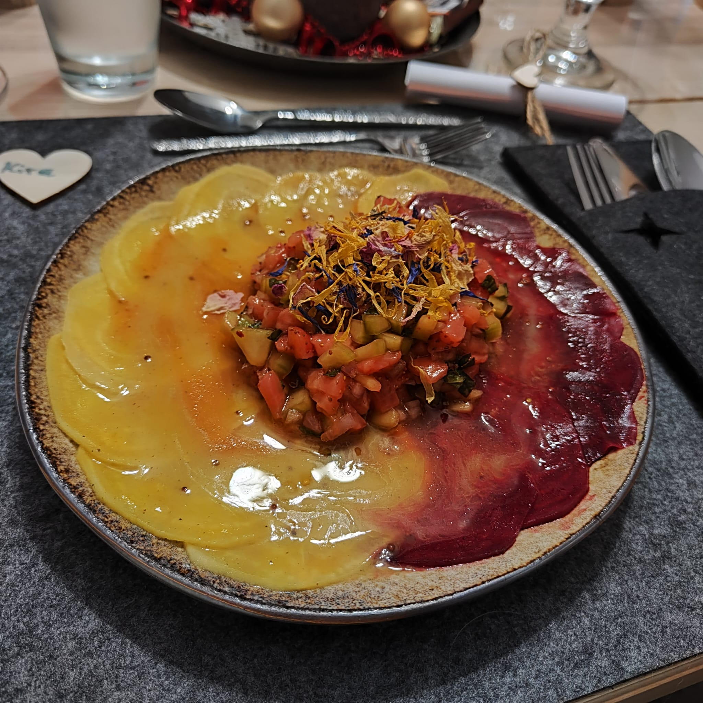

Bunte-Bete-Carpaccio mit Erdbeer-Gurken-Salsa

Vorbereitung Bunte-Bete-Carpaccio
Zutaten für 4 Personen
- 600 g Beten und Rüben (Rote und Gelbe Beten, Chioggia-Rüben)
- 1 Apfel
- 1 Zitrone (Saft und Schale)
- 8 EL Olivenöl
- 6 TL Senf (körnig)
- Salz
- Pfeffer
- 6 EL Agavendicksaft
Zubereitung
- Apfel fein würfeln. Mit Zitronensaft und -schale mischen. Aus Olivenöl, Senf, Salz, Pfeffer und Agavendicksaft ein Dressing rühren. Apfelwürfel untermischen.
- Beten und Rüben schälen und in feine Scheibe hobeln. (Rote Bete als letztes verwenden, damit nicht alles rot verfärbt wird. Die Scheiben in getrennten Schüsseln mit jeweils einem Viertel des Dressings vermischen und mindestens zwei Stunden ziehen lassen. Das restliche Dressing kalt stellen.
Vorbereitung Erdbeer-Gurken-Salsa
Zutaten für 4 Personen
- 200 g Erdbeeren
- 1 Gurke
- 2 Schalotten
- 30 Minzblätter, fein gehackt
- 2 EL Zitronensaft
- 2 EL Honig
- Salz
- Piment d'Espelette
- 4 EL Olivenöl
Zubereitung
- Erdbeeren fein würfeln. Gurke schälen, längs halbieren und mit einem Teelöfel die Kerne entfernen. Gurke fein würfeln. Schlaotten fein würfeln. Erdbeer-, Gurken- und Schalottenwürfel mit den gehackten Minzblättern vermischen
- Honig und Zitronensaft dazugeben und vermengen. Mit Salz und Piment d'Espelette abschmecken. Olivenöl unterziehen und mindenstens zwei Stunden ziehen lassen.
Anrichten
Zutaten für 4 Personen
- Vorbereitetes Bunte-Bete-Carpaccio
- Vorbereitete Erdbeer-Gurken-Salsa
- Dressing
- Essbare Blütenblätter
Zubereitung
- Die Carpaccio-Scheiben abwechselnd und blütenförmig auf Tellern ausbreiten
- Die Erdbeer-Gurken-Salsa in der Mitte verteilen
- Das restliche Dressing über das Carpaccio träufen
- Alles mit essbaren Blütenblättern garnieren
Zurück zur Übersicht